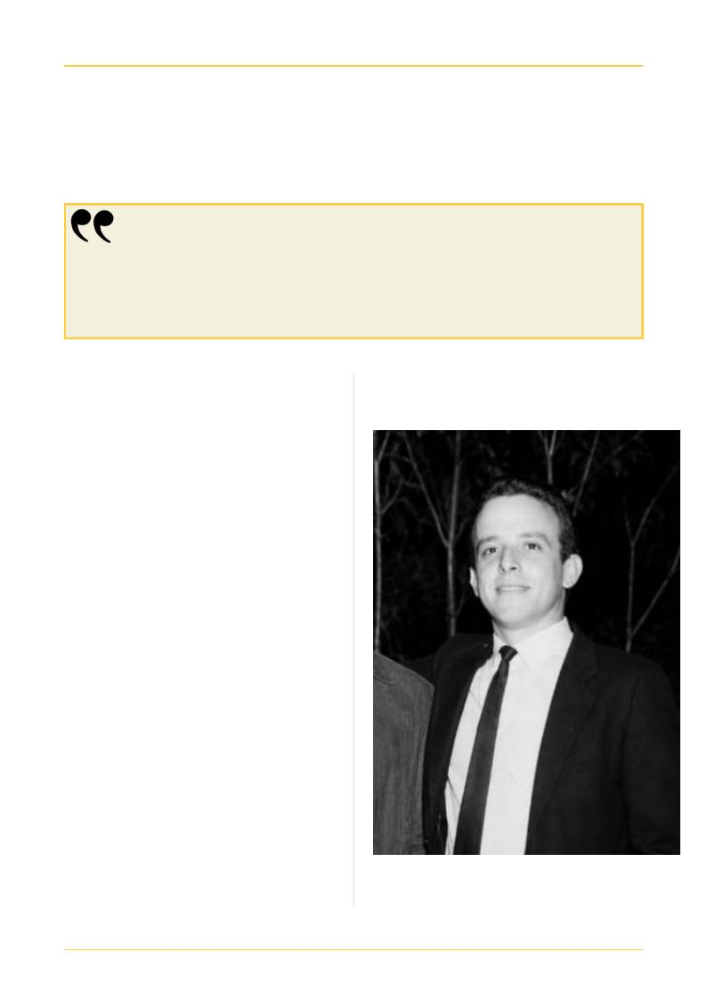

HOMENAGEM
34
Professor Wilmar Torrano — Uma vida
dedicada à Radiologia e à Educação
Seis décadas de conhecimento, evolução e compromisso com a formação de profissionais
ALÉM DA IMAGEM · CORED-SP · CRTR-SP
34
A trajetória do professor Wilmar Torrano se
confunde com momentos importantes da evolução
da Radiologia. Seus primeiros contatos com a área
aconteceram em 1967, quando trabalhava na
Ortopedia do Hospital São Luiz e acompanhava
exames em pacientes internados. No ano seguinte,
por sugestão de um colega, trocou o curso de
Auxiliar de Enfermagem pelo de Operador de Raios
X. A decisão definiria sua trajetória profissional.
Naquela época, a Radiologia era muito diferente.
Wilmar iniciou com um equipamento Westinghouse
de 200 mA, sem colimador, Bucky acionado por uma
cordinha e revelação manual das imagens. Os
próprios
químicos
eram
preparados
e
o
conhecimento chegava por meio de apostilas
mimeografadas e dos poucos livros disponíveis.
Ao longo de quase seis décadas, acompanhou
transformações que revolucionaram a profissão: das
processadoras automáticas aos sistemas CR e DR e à
Radiologia digital, chegando às possibilidades da
Inteligência Artificial. Para Wilmar, a tecnologia
deve ser uma ferramenta de apoio ao profissional, e
não uma substituição de sua responsabilidade.
Resultados e laudos precisam ser avaliados e
revisados, mantendo como prioridades a qualidade
do exame e a segurança do paciente.
A partir da década de 1990, sua experiência
ganhou uma nova dimensão: a educação. Em 1996,
recebeu o convite para coordenar a Escola Global,
em Campinas, a primeira escola de Radiologia do
interior paulista, onde também passou a atuar como
professor. Na sala de aula, levou não apenas
conhecimento técnico, mas a experiência de quem
acompanhou de perto a transformação da profissão
e a compreensão de que formação, responsabilidade
e cuidado caminham juntos.
O conhecimento precisa ser compartilhado, a profissão
precisa ser exercida com amor, e o paciente nunca pode
deixar de ser o centro do nosso trabalho.
Se existe um legado que gostaria de deixar, é justamente este:
Acervo do autor: 1967